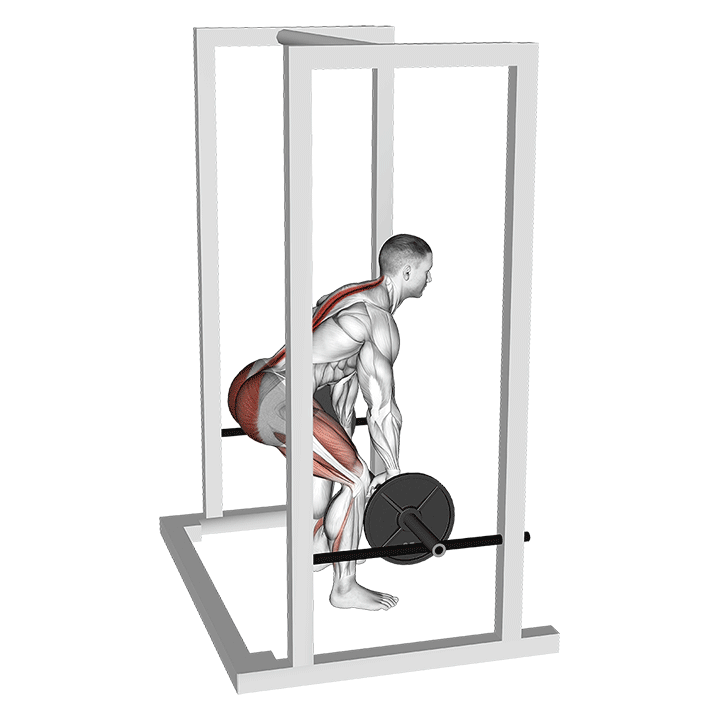
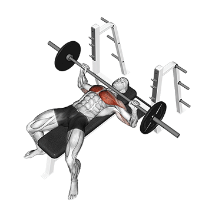
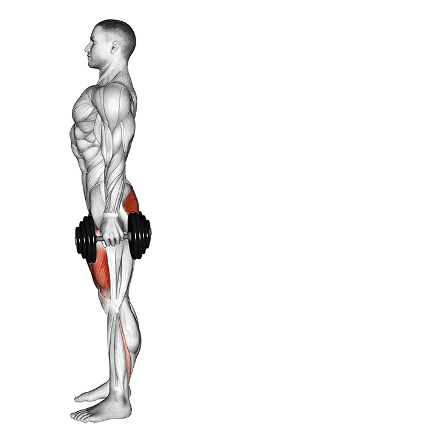
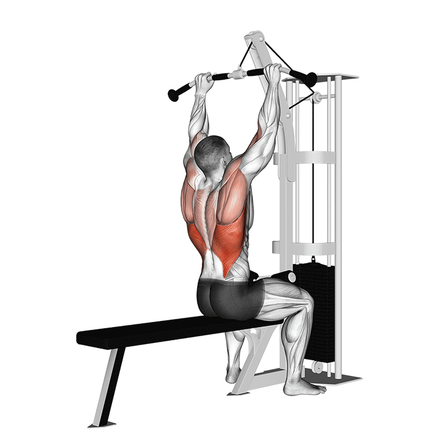
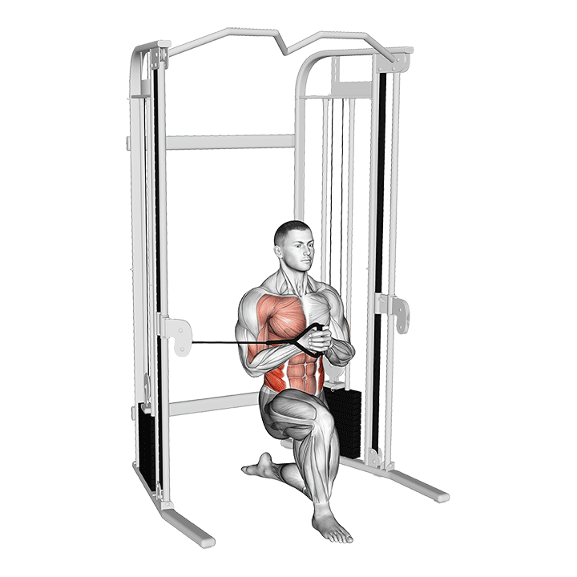
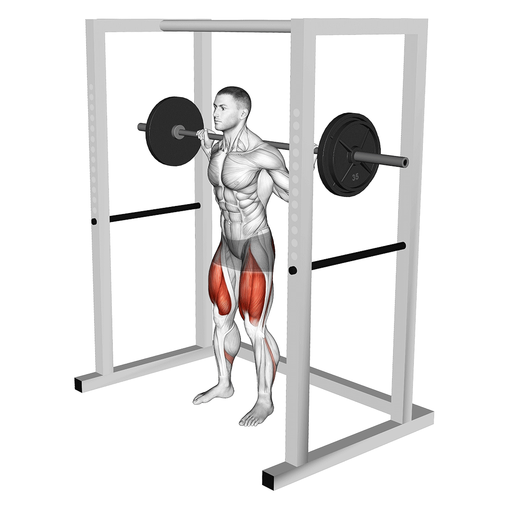
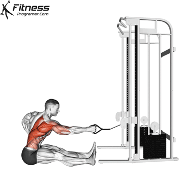
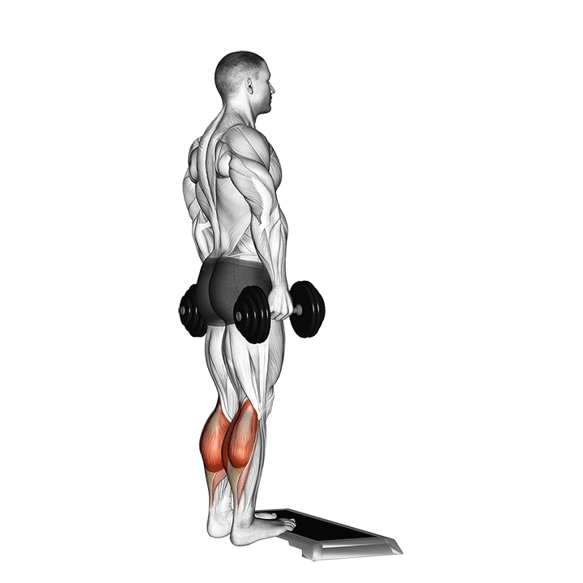
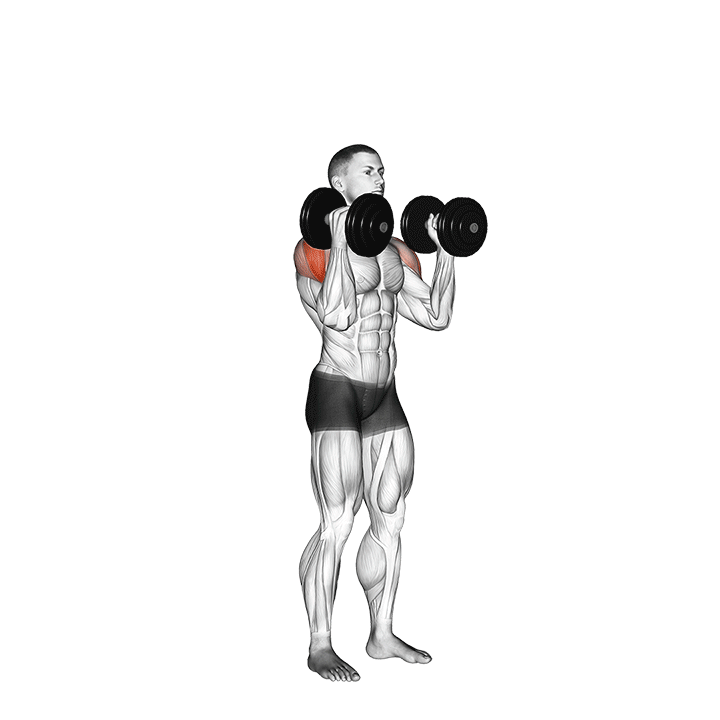
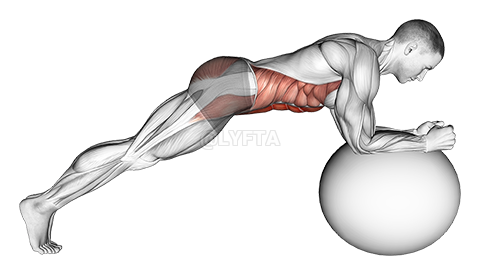

Sesión Lunes: Fuerza A + Core A
⏱ 45-50 min1. Peso Muerto Rumano con Barra
3 x 8-10 | RIR 2
Equipo: Barra olímpica y discos del rack.
Enfoque: Bisagra de cadera. Fortalece isquiotibiales y glúteos para absorber el impacto en asfalto y proteger la rodilla.
Cómo colocarme:
- Coloca la barra en los soportes bajos del rack o en el suelo.
- De pie frente a la barra, coloca los pies a la anchura de las caderas con las puntas mirando al frente.
- Agarra la barra con las palmas mirando hacia ti (agarre prono) a la anchura de los hombros.
- Levanta la barra y da dos pasos atrás; mantén la espalda erguida, los hombros abajo y atrasados, y el pecho erguido.
Cómo ejecutar:
- Inhala y aprieta el abdomen.
- Flexiona ligeramente las rodillas (mantenlas en ese ángulo fijo durante todo el movimiento).
- Inicia el movimiento llevando la cadera hacia atrás como si quisieras tocar la pared trasera con el culo, dejando que la barra baje pegada a los muslos.
- Baja hasta justo debajo de las rodillas (o hasta sentir un estiramiento potente en la parte trasera del muslo sin doblar la espalda).
- Exhala y regresa empujando la cadera hacia adelante y apretando los glúteos al llegar arriba.
Qué peso debo elegir: Empieza con la barra sola (20 kg) o añade un par de discos pequeños (ej. 5 kg por lado para 30 kg en total). Busca una carga para 8-10 reps con RIR 2.
Errores que debo evitar:
- ❌ Doblar la zona lumbar al bajar: Ocurre por querer bajar la barra hasta el suelo. Baja solo hasta donde la flexibilidad de tus isquios lo permita manteniendo la espalda neutra.
- ❌ Convertirlo en una sentadilla: Doblar en exceso las rodillas hacia adelante en lugar de llevar la cadera atrás.
- ❌ Separar la barra del cuerpo: La barra debe rozar tus piernas durante todo el recorrido.
2. Press de Banca Plano con Barra
3 x 8-10 | RIR 2
Equipo: Banco plano colocado en la jaula y barra en los soportes.
Enfoque: Empuje horizontal para la musculatura del torso (pectoral, hombros y tríceps).
Cómo colocarme:
- Túmbate en el banco con la barra a la altura de la línea de tus ojos.
- Apoya los pies firmes y planos en el suelo.
- Agarra la barra a una anchura algo mayor que tus hombros.
- Junta las escápulas atrás contra el banco (saca pecho) antes de sacar la barra.
Cómo ejecutar:
- Saca la barra de los soportes y colócala sobre la vertical de tu pecho con los brazos extendidos.
- Inhala y baja la barra de forma guiada hacia la mitad inferior del pecho (altura de los pezones). Los codos deben bajar formando un ángulo de unos 45° respecto al torso (en forma de "flecha", no de "T").
- Toca ligeramente el pecho con la barra sin hacer rebotar el peso.
- Empuja la barra hacia arriba de forma explosiva hasta la posición inicial sin despegar la espalda del banco.
Qué peso debo elegir: Empieza con la barra sola (20 kg). Si la mueves con total fluidez, añade 2.5 kg por lado (25 kg total). Meta: 3 x 8-10 con RIR 2.
Errores que debo evitar:
- ❌ Abrir los codos a 90°: Esto genera mucha tensión innecesaria en la articulación del hombro.
- ❌ Levantar los pies del suelo o despegar la cadera del banco para ayudar en el empuje.
- ❌ Rebotar la barra en el esternón.
3. Zancadas Atrás con Mancuernas
3 x 10 | RIR 2
Equipo: Par de mancuernas hexagonales.
Enfoque: Estabilidad unipodal, fortalecimiento de cuádriceps, glúteos y prevención de descompensaciones en piernas.
Cómo colocarme:
- Ponte de pie en un espacio despejado sosteniendo una mancuerna en cada mano con las palmas mirando hacia tus muslos.
- Mantén el torso erguido y la mirada al frente.
Cómo ejecutar:
- Da un paso largo hacia atrás con la pierna derecha.
- Baja la cadera de manera vertical hasta que ambas rodillas formen un ángulo cercano a los 90° (la rodilla trasera casi toca el suelo).
- La rodilla delantera debe quedar alineada con el pie delantero, sin colapsar hacia adentro.
- Empuja con fuerza usando el talón de la pierna delantera para volver a la posición de pie.
- Completa 10 repeticiones con una pierna o alternando piernas según prefieras.
Qué peso debo elegir: Empieza con mancuernas ligeras (ej. 6 kg o 8 kg por mano). Prioriza la estabilidad antes de subir peso.
Errores que debo evitar:
- ❌ Dar el paso demasiado corto: Provoca que la rodilla delantera sobrepase en exceso la punta del pie y se levante el talón.
- ❌ Colapsar la rodilla hacia adentro (valgo de rodilla): La rodilla debe apuntar siempre hacia la punta del pie.
- ❌ Inclinarse hacia adelante perdiendo la postura recta del torso.
4. Jalón al Pecho en Polea Alta
3 x 10-12 | RIR 2
Equipo: Estación de poleas con agarre de barra ancha en la parte superior y banco colocado debajo.
Enfoque: Tracción vertical para la estabilidad de la espalda alta, dorsal ancho y postura de carrera.
Cómo colocarme:
- Coloca el agarre ancho en la polea alta.
- Siéntate en el banco de cara a la máquina.
- Agarra la barra con las palmas mirando al frente, con un agarre más ancho que tus hombros.
- Inclina la espalda hacia atrás muy ligeramente (unos 10-15°).
Cómo ejecutar:
- Inhala y saca pecho.
- Inicia el movimiento tirando de los codos hacia abajo y hacia atrás, llevando la barra directamente hacia la parte alta del pecho (por encima de los pezones).
- Aprieta las escápulas abajo durante 1 segundo al llegar al pecho.
- Regresa la barra de forma lenta y controlada hasta estirar los brazos casi por completo.
Qué peso debo elegir: Elige una placa en el selector (ej. 25 - 30 kg) que te permita completar 10-12 repeticiones sintiendo el trabajo en la espalda.
Errores que debo evitar:
- ❌ Llevar la barra detrás de la nuca: Es biomecánicamente lesivo para la articulación del hombro.
- ❌ Balancear en exceso el cuerpo hacia atrás para usar el impulso en lugar de la espalda.
- ❌ Encoger los hombros hacia las orejas al subir.
5. Press Pallof en Polea
3 x 12 por lado
Equipo: Polea regulable ajustada a la altura del pecho con manija individual.
Enfoque: Anti-rotación. Fortalece la musculatura abdominal profunda para evitar balanceos e inercias de tronco en carrera.
Cómo colocarme:
- Ajusta la polea a la altura de tu esternón.
- Colócate de lado a la torre de poleas.
- Agarra la manija con ambas manos y pégala al centro del pecho.
- Da 2 o 3 pasos laterales para alejarte de la máquina y generar tensión inicial en el cable.
- Coloca los pies a la anchura de las caderas y flexiona ligeramente las rodillas.
Cómo ejecutar:
- Aprieta el abdomen y los glúteos.
- Exhala y extiende ambos brazos al frente en línea recta, alejando las manos del pecho.
- Aguanta la posición con los brazos completamente extendidos durante 2 segundos resistiendo la fuerza del cable que intenta hacerte girar.
- Inhala y vuelve a llevar las manos pegadas al pecho de forma controlada.
- Haz 12 repeticiones hacia un lado, gírate 180° y realiza otras 12 repeticiones para el lado contrario.
Qué peso debo elegir: Requiere un peso muy ligero (ej. 5 kg a 10 kg en la placa). La meta es mantener el tronco inmóvil como una roca.
Errores que debo evitar:
- ❌ Permitir que el tronco o la cadera giren hacia la máquina al extender los brazos.
- ❌ Rotar los hombros o inclinar el cuerpo hacia el lado opuesto para compensar.
- ❌ Mover los brazos con prisas: La clave es la pausa isométrica de 2 segundos al extender los brazos.
Sesión Viernes: Fuerza B + Core B
⏱ 45-50 min1. Sentadilla Trasera con Barra (o Goblet)
3 x 8-10 | RIR 2
Equipo: Rack/jaula con barra olímpica (o una mancuerna pesada si prefieres versión Goblet).
Enfoque: Dominancia de rodilla. Desarrolla la fuerza global del tren inferior para absorber los impactos en carrera y potenciar las subidas.
Cómo colocarme:
- Ajusta los soportes del rack a la altura del esternón.
- Métete debajo de la barra y apóyala firmemente sobre los trapecios (parte alta de la espalda, nunca sobre el hueso del cuello).
- Agarra la barra con ambas manos para fijarla, levántala extendiendo las piernas y da dos pasos hacia atrás.
- Coloca los pies a la anchura de los hombros con las puntas ligeramente orientadas hacia afuera (unos 15-30°).
Cómo ejecutar:
- Inhala profundo y aprieta el abdomen (como si fueras a recibir un golpe).
- Flexiona rodillas y cadera al mismo tiempo, bajando la cadera entre las piernas manteniendo el pecho erguido.
- Baja de forma controlada hasta que tus muslos queden al menos paralelos al suelo.
- Empuja con fuerza contra el suelo con toda la planta del pie (especialmente el talón) para subir.
- Exhala en la parte final del ascenso.
Qué peso debo elegir: Con barra olímpica sola (20 kg) o añadiendo 2.5 kg por lado (25 kg total). En versión Goblet, empieza con una mancuerna de 10-12 kg contra el pecho.
Errores que debo evitar:
- ❌ Meter las rodillas hacia adentro al subir (valgo): Fuerza a tus rodillas a seguir la dirección de las puntas de tus pies.
- ❌ Curvar la zona lumbar en la parte más baja: Si la pelvis se redondea, baja solo hasta donde mantengas la columna recta.
- ❌ Levantar los talones del suelo: Indica falta de movilidad de tobillo o desplazamiento excesivo del peso hacia adelante.
2. Remo Horizontal en Polea Baja
3 x 10 | RIR 2
Equipo: Estación de poleas con el tirador abajo y agarre doble/manijas (o barra olímpica).
Enfoque: Tracción horizontal para equilibrar la postura de la espalda y mejorar la eficiencia del braceo en carrera.
Cómo colocarme:
- Si usas polea baja: coloca un banco frente a la máquina o siéntate en el suelo con las piernas semiflexionadas.
- Agarra la manija doble con los brazos extendidos y el torso completamente erguido.
- Desconecta los hombros manteniéndolos abajo (lejos de las orejas).
Cómo ejecutar:
- Inhala, saca pecho y aprieta el abdomen.
- Tira del agarre hacia la zona inferior del abdomen (hacia el ombligo), llevando los codos bien pegados al cuerpo y hacia atrás.
- En el punto de máxima contracción (agarre tocando el abdomen), junta las escápulas atrás durante 1 segundo.
- Regresa los brazos a la posición extendida de forma lenta y controlada sin dejar que el peso te arrastre.
Qué peso debo elegir: Elige una placa en la polea (ej. 20 - 25 kg) que te permita marcar bien la pausa de 1 segundo en el abdomen en las 10 repeticiones.
Errores que debo evitar:
- ❌ Usar el impulso de la lumbar: Balancear el torso hacia atrás y hacia adelante para mover el peso.
- ❌ Encoger los hombros hacia las orejas: Tira con la espalda y los codos, no con los trapecios superiores.
- ❌ Llevar los codos demasiado abiertos hacia afuera.
3. Elevación de Talones a una Pierna
3 x 12-15 por lado
Equipo: Peso corporal apoyándote en espaldera/pared (opcionalmente una mancuerna ligera en la mano).
Enfoque: Fortalecimiento del complejo sóleo/gemelo y tendón de Aquiles, crucial para evitar fascitis plantar y sobrecargas en asfalto.
Cómo colocarme:
- Ponte de pie frente a la espaldera o una pared.
- Apoya las yemas de los dedos de una mano para mantener el equilibrio (no para empujar).
- Flexiona una pierna hacia atrás, quedándote apoyado únicamente sobre la planta del otro pie.
Cómo ejecutar:
- Despega el talón del suelo empujando con la bola del pie (metatarso) hasta subir lo más alto posible.
- Aguanta la posición arriba 1 segundo sintiendo la contracción intensa en la pantorrilla.
- Baja despacio apoyando de nuevo todo el talón en el suelo de forma suave (duración de la bajada: 2-3 segundos).
- Haz 12-15 repeticiones y cambia de pierna.
Qué peso debo elegir: Primero con peso corporal. Cuando completes 3 series de 15 reps con soltura, usa una mancuerna de 4-6 kg en la mano del lado de la pierna activa.
Errores que debo evitar:
- ❌ Hacer rebotar el talón: El movimiento debe ser pausado y controlado tanto al subir como al bajar.
- ❌ Empujar con los brazos en la pared/espaldera: Toda la fuerza debe salir del tobillo y la pierna.
4. Press Militar con Mancuernas
3 x 10 | RIR 2
Equipo: Par de mancuernas hexagonales.
Enfoque: Empuje vertical para estabilizar los hombros y la columna erguida.
Cómo colocarme:
- Siéntate en un banco erguido a 90° o ponte de pie con los pies a la anchura de las caderas.
- Eleva las mancuernas hasta la altura de tus hombros con las palmas mirando hacia al frente o ligeramente enfrentadas (agarre neutro/semiprono).
- Mantén el abdomen contraído y el pecho alto.
Cómo ejecutar:
- Exhala y empuja ambas mancuernas verticalmente hacia arriba por encima de la cabeza hasta extender los brazos casi por completo.
- Las mancuernas deben subir en una línea vertical centrada sobre tus hombros.
- Inhala y baja de manera guiada hasta que las mancuernas vuelvan a rozar la altura de los hombros/orejas.
Qué peso debo elegir: Empieza con un par de mancuernas de 6 kg o 8 kg por mano para asegurar 10 repeticiones fluidas.
Errores que debo evitar:
- ❌ Arquear en exceso la zona lumbar (suele pasar si el peso es pesado o falta fuerza en el core).
- ❌ Chocar las mancuernas violentamente arriba.
- ❌ Adelantar la cabeza o dejar caer las mancuernas por delante del cuerpo.
5. Plancha Frontal sobre Fitball
3 x 30-45 seg
Equipo: Pelota de ejercicios (fitball) colocada en el suelo.
Enfoque: Anti-extensión lumbar. Enseña a la faja abdominal a sostener la columna recta bajo fatiga al correr.
Cómo colocarme:
- Arrodíllate frente al fitball.
- Apoya los antebrazos sobre la parte superior del fitball cruzando los dedos o con las manos paralelas.
- Extiende las piernas hacia atrás apoyando las puntas de los pies en el suelo a la anchura de las caderas.
Cómo ejecutar:
- Eleva las rodillas del suelo formando una línea recta perfecta desde la cabeza hasta los talones.
- Aprieta con fuerza los glúteos y el abdomen (empuja el ombligo hacia dentro).
- Mantén la posición inmóvil durante 30 a 45 segundos mientras respiras de forma fluida.
- Para mayor dificultad, haz micropulsos o círculos lentos con los codos sobre el balón sin mover la cadera.
Qué peso debo elegir: Peso corporal. Si resulta inestable al principio, realiza las primeras semanas la plancha frontal normal sobre el suelo.
Errores que debo evitar:
- ❌ Dejar que la cadera se hunda hacia el suelo (hiperlordosis): Genera presión lumbar. Si ocurre, sube la cadera o apoya rodillas.
- ❌ Elevar demasiado el culo formando una "V" invertida.
- ❌ Bloquear la respiración (apnea).